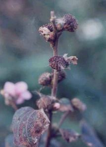

34.梵天花
虱母子頭
多年生亞灌木狀草本，高約1m。莖直立，密被白色毛茸。單葉互生，葉柄長1～2cm；托葉2，條形，被毛；葉片形狀、大小差異較大，卵狀三角形，卵形至圓形，長4～7cm，寬2～6cm，先端鈍，基部心形，有時寬楔形或鈍圓，不裂或具3～5淺裂，不超過葉的中部。邊緣有不規則重鋸齒，沿葉緣內面有顏色較淺的斑痕，上面被柔毛，下面有星狀絨毛，掌狀主脈3～7條。夏秋葉腋生花，有花梗；副萼5；花瓣5，倒卵狀橢圓形；長約1cm，淡紅色，先端鈍圓；雄蕊多數雌蕊柱頭10裂。蒴果球形，直徑近1cm，分果有鉤狀刺毛。 |
||
|  | ||